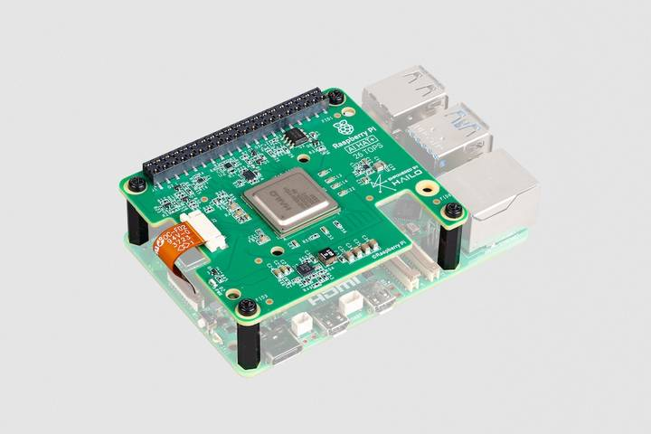
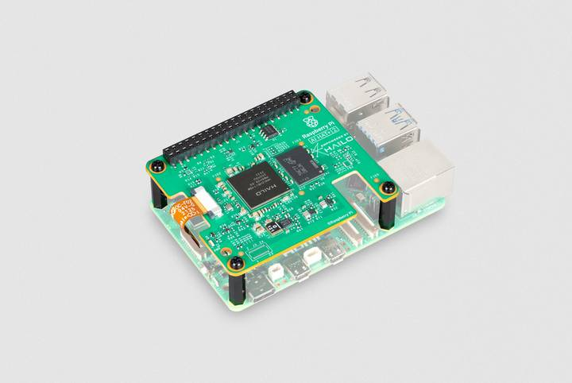

AI HAT overview
AI HATs are add-on boards for 5 that come with a built-in AI accelerator chip: the Kestrel neural processing unit (NPU). The Kestrel NPU allows 5 to run hardware-accelerated AI models locally, removing the need to send data to a remote cloud server for processing. This edge AI approach improves performance, reduces latency, and helps to keep data private. For information about how AI HATs integrate with 5 to provide hardware-accelerated AI inference, see How the AI HAT works.
AI HATs use the newer HAT specification, indicated with a plus sign (+). There are two AI HAT models: AI HAT+ and AI HAT+ 2. For more information, see AI HAT models compared. These AI HATs are available in different performance variants, measured in tera-operations per second (TOPS) of inference performance. AI HAT+ is available in a 13 TOPS or a 26 TOPS variant; AI HAT+ 2 is available in a single 40 TOPS variant. For more information, see AI HAT performance variants.

Figure 1. The 26 tera-operations per second (TOPS) AI HAT+

Figure 2. The 40 tera-operations per second (TOPS) AI HAT+ 2
Related topic: AI HAT models compared